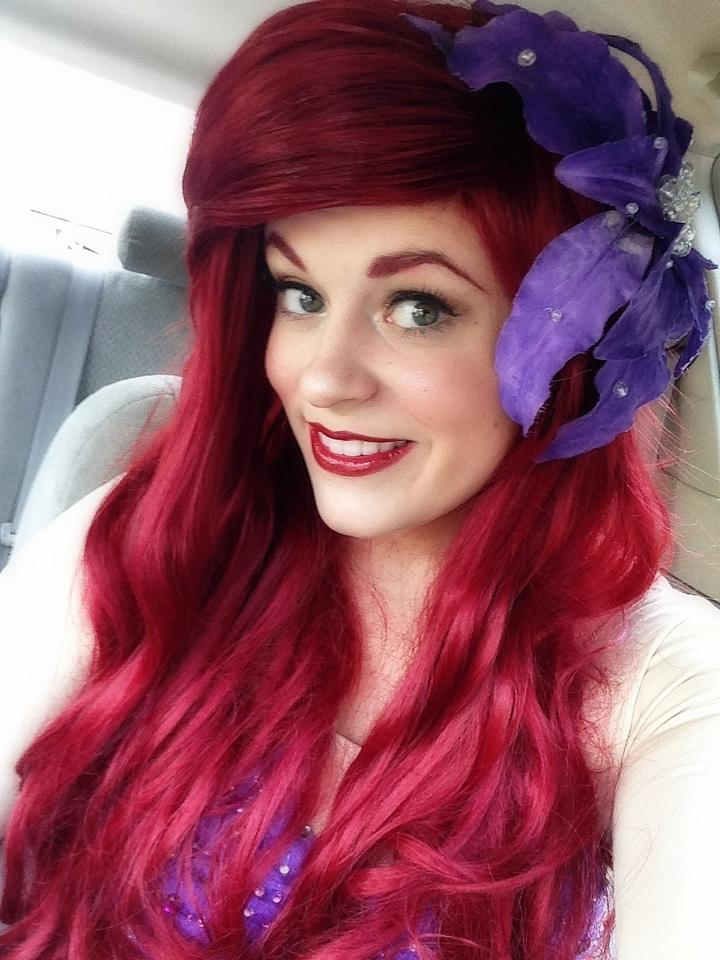
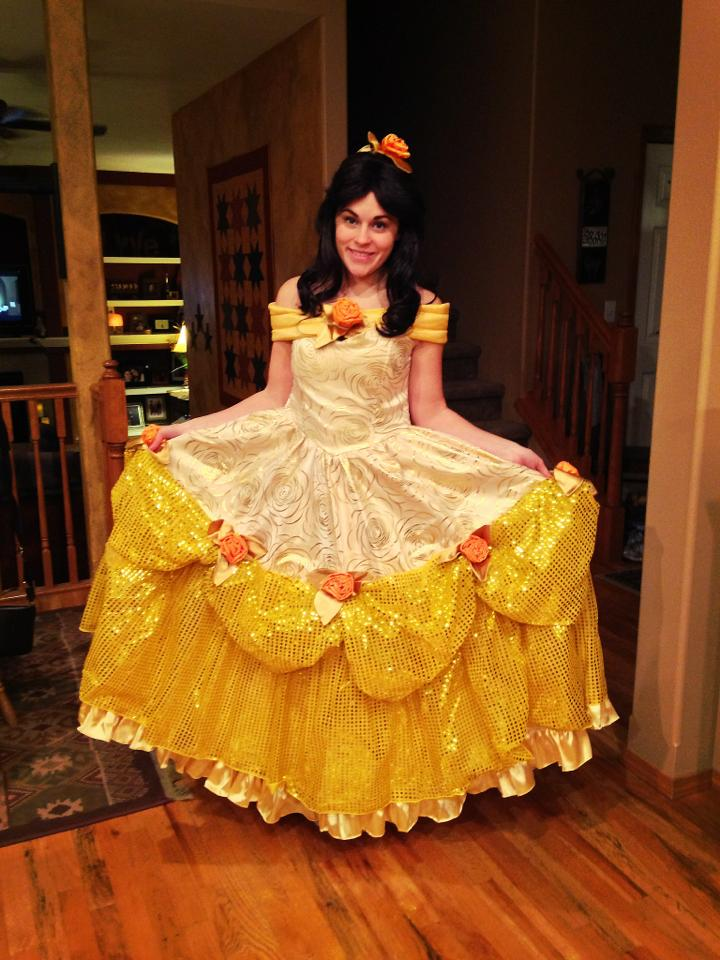
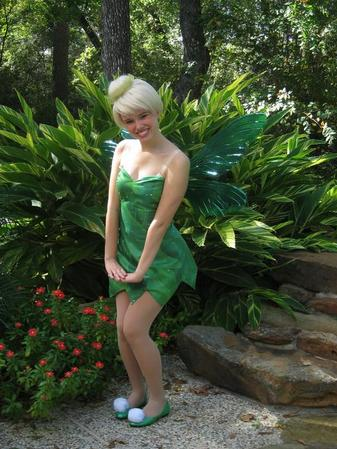
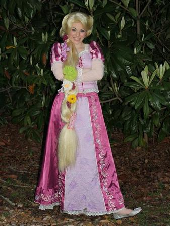
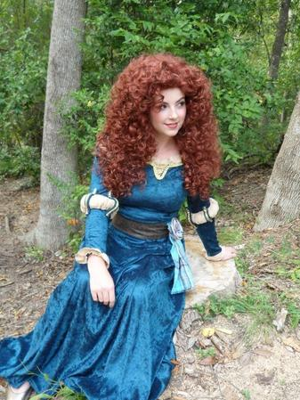
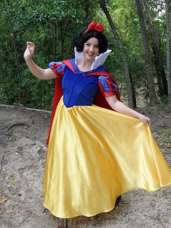

The Little Mermaid
 Our Little Mermaid is curious, bubbly and loves to have a good time. She is passionate about singing and is incredibly interested in all things human. She cannot wait to attend your event and have the time of her life singing, dancing and discovering all kinds of new thing-a-ma-bobs and human things.
Our Little Mermaid loves to swim into parties and events in her fin. While in her full fin, our mermaid can only stay in one place, since she is not in the ocean. However she would love to also attend your party in her "walking" fin, her daytime adventure dress, her pink dinner ballgown or her aqua Disneyland inspired ballgown. When booking a party, please specificy which outfit you would like our Little Mermaid to attend your event in. Our little mermaid would also love to attend your event with her handsome Prince Erik. If you would like Erik to also attend your event, please review event pricing and specify when you book.
Beauty
Beauty is a smart and inquisitive girl who loves to read. She is brave, kind and loving. She cannot wait to attend your party in her sparkling yellow ballgown adorned with roses. She will have so much fun singing, doing crafts and playing games at your event and she is particularly excited to take part in story time. She would love to share her story all about how she had an exciting adventure and she fell in love with a beast who was realy a handsome prince.
Beauty will also be able to attend parties in her blue and white day time dress. At colder, winter parties, Beauty will also attend in her winter cloak.
Tinker Fairy
Our Tinker Fairy has so much fun flying to the Mainland alone, or with her other fairy friends, to attend events. Beacuse she is a Tinker Fairy, her favorite event activity is enjoying arts and crafts. She cannt wait to tinker something amazing with you at her event, and regail you with all of her tales from Neverland.
Our Tinker Fairy is available to attend your event in her traditional green lead dress, in her adventure outfit or in her winter coat and boots. Although our Tinker Fairy would love to attend your event alone, she is also very excited to share her event experience with her other Fairy Friends. Our wind fairy, water talent fairy, animal talent fairy, garden talent fairy and pixie dust keepign fairy (boy) would love to attend your event as well.
Rapunzel
 Rapunzel is so excited to be out of her tower and out in the world exploring. She loves parties and dancing and cannot wait to attend your event. She loves to play games and sing and make new friends, and particularly enjoys painting and crafting.
Rapunzel had all of her magical hair cut off, but just enough magic was in it for her to grow it back down to her feet! Rapunzel will attend your party in purple dress with her hair either in a braid adorned with beautiful flowers or down and flowing with her royal crown on. Rapunzel would love to attend your party with her handsome husband Eugene as well. If you would like for them to appear together, please specify when you book your party and party package prices.
Scottish Princess
Our Scottish Princess is very brave and adventuresome. She speaks with a scottish accent and loves to ride horses, explore and seek out adventure. She cannot wait to come to your event and experience an adventure with you. She loves to play games and tell stories, and she would love to teach your party guests archery! During story time she will tell you a tale of how her own quest to change her fate resulted in her mother and brothes being turned into bears!
Our Scottish Princess would like to attend your party in her green velvet scottish dress. If you would like her to teach archery at your party, please specify when booking your event and please review event pricing.
Sleeping Beauty

Sleeping Beauty is graceful and gentle. She loves to make new friends and share with people the importance of love, sharing and kindness. Sleeping Beauty would enjoy telling stories and playing games at your event, and sharing her story about how she pricked her finger and was awoken by a kiss from her handsome Prince.
Sleeping Beauty will attend your event in her pink dress with a flower brocade, wearing her hair downa and curly, adorned with a golden crown. Sleeping Beauty would enjoy attending your event with her handsome Prince and they would love to tell you their tale of how her Prince slayed an evil dragon in order to save his princess. If you would like Sleeping Beauty to attend your party with her prince please specify when booking your event and review the event pricing.
Snow White
 Snow White has a beautiful singing voice and loves to spend time with animals. She shares a castle with her handsome Prince Charming now, but would love to tell you her story about how she once shared a cottage with seven dwarves and how she fell asleep after eating a poison apple, and was not awoken until her prince bestowed a kiss of true love upon her.
Snow White will attend your party in her royal blue, red and yellow gown and will love to share story time with you as well as play games and do crafts!